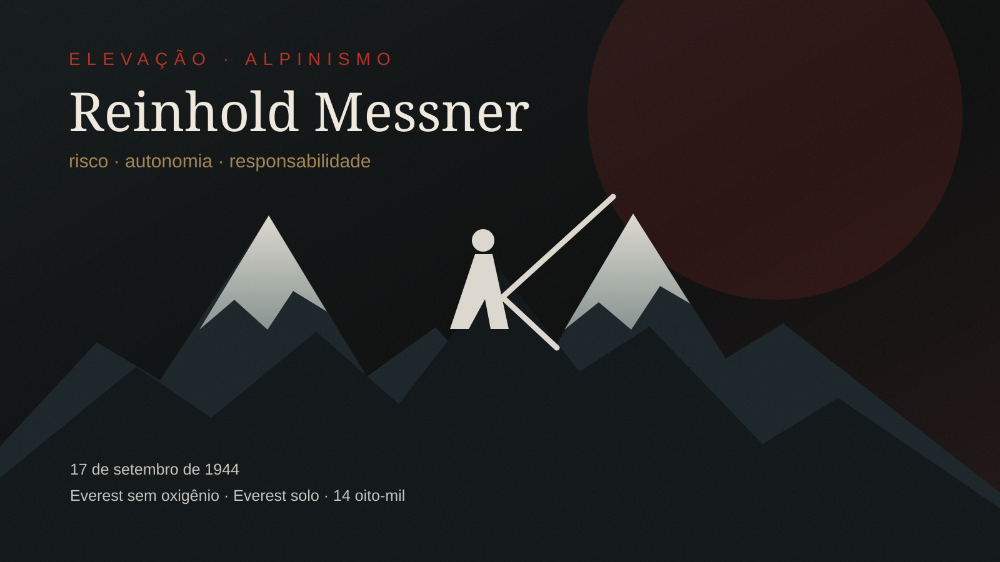

Reinhold Messner nasceu em 17 de setembro de 1944 e se tornou uma das figuras decisivas do alpinismo moderno. Sua importância não está apenas na lista de cumes, mas na forma como recolocou risco, autonomia e responsabilidade no centro da montanha.
O nascimento de uma ética
Messner cresceu nas Dolomitas, onde começou a escalar ainda jovem. Antes de ser nome mundial, formou-se numa cultura de parede, exposição e decisão direta. Esse começo ajuda a entender por que sua carreira rejeitaria o excesso de estrutura como medida de grandeza.
1978: Everest sem oxigênio suplementar
Em 1978, Messner e Peter Habeler realizaram a primeira ascensão do Everest sem oxigênio suplementar. O feito contrariou a ideia de que o limite fisiológico tornava essa tentativa inviável e deslocou a discussão sobre dependência tecnológica em altitude extrema.
1980: Everest solo
Dois anos depois, Messner realizou a primeira ascensão solo do Everest, pela face norte. A ausência de parceiro e de grande estrutura transformou a escalada em experiência radical de autonomia.
Os 14 picos acima de 8.000 metros
Em 1986, tornou-se o primeiro alpinista a completar os 14 picos do planeta acima de 8.000 metros. Mesmo assim, reduzir sua trajetória a essa lista seria pouco: o impacto maior foi ético, com equipes menores, estilo mais leve e responsabilidade individual.
Risco, autonomia e responsabilidade
Messner ajudou a popularizar uma visão do alpinismo em que liberdade não significa irresponsabilidade. A montanha pode ser espaço de decisão pessoal, mas cada decisão carrega custo para o alpinista, parceiros, resgates e comunidades locais.